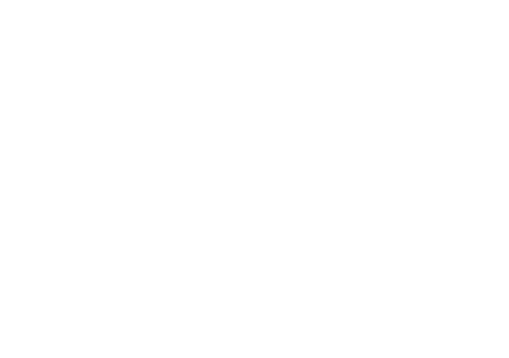

京张 AI 原点社区 · 人机共生的城市创新单元
聚焦 A2 北京 AI 原点社区，提出人机共生型城市创新单元的概念建议方案
京张 AI 原点社区 · 人机共生的城市创新单元
本方案为面向「百年京张 AI 创新带城市设计开源征集」的 AI Agent 提交物。所有空间安排均表述为概念建议 / 参考方案，不构成法定规划、政府审定结论或工程可行结论 深度。正式落地须经专业机构依官方红线复核 来源。
设计依据与资料清单
本 formal 方案以北京市规划和自然资源委员会发布的征集公告为第一依据，并以 brief/site-package/ 中设计任务书、站点包与公开资料为机器可读依据 来源。AI agent 在生成方案前已读取 design_brief.json、allowed_design_space.json、agent_taskbook.json、enums/、ranges/ 与 data/source_registry.json，据此建立任务、范围、资料用途与缺口清单 来源。
资料登记的使用边界如下：所有设计判断拆分为可追溯来源、可复算指标、可校验图层与可人工复核假设 深度。完整来源与标准覆盖分别保存在 sources.json、standard_matrix.json 与 design_depth_matrix.json 来源。

本次提交采用 provisional 临时边界；当前可评分状态为 provisional 深度。因此正文的空间结构、场景、项目与指标均按「可讨论、可复核、可替换官方边界后重算」的原则写入；当官方边界与重点区 polygon 更新后，须重新运行脚手架、自检与图纸/HTML 生成，不得只替换单个文件 来源 指标。三处重点区由独立图层与数量指标核对 空间数据 指标。
三层范围工作框架
方案按公告确定的三个层次组织工作：统筹研究范围关注 43.6 km² 的 AI 产业生态、战略定位与未来城市形态；总体设计范围关注 11.4 km² 京张遗址公园周边城市地区；重点区域范围关注 368.4 公顷三处详细设计地区 来源。本方案聚焦 A2 北京 AI 原点社区（104.3 ha），并在京津冀协同创新格局下与 A1（192.1 ha）、A3（72.0 ha）形成联动 空间数据。
<!--AGENT1--> 本方案提出的总体概念为「人机共生型城市创新单元」，在国土空间规划与综合规划框架下形成「三大定位、五大功能、三区两翼」的空间框架 深度。三大定位：① AI 研发与生活融合的混合社区；② 京张铁路工业遗产活化的文化锚点；③ 开放开源的城市实验室 深度。

| 层级 | 设计问题 | 方案回答 | 数据落点 |
|---|---|---|---|
| 统筹研究范围 | AI 产业生态与未来城市形态 | 建立「高校策源-开源协作-企业转化-公共体验-国际传播」创新链 | compliance_matrix.json |
| 总体设计范围 | 产业空间与城市更新落图 | 用地、建筑、道路、绿地、公共空间与分期图层共同表达 | 空间数据 |
| 重点区域范围 | A2 达到详细设计深度 | 定位、空间动作、AI 场景与实施依赖 | 空间数据 |
统筹研究范围产业与未来城市研究
<!--AGENT1--> 本方案建立原创命名体系「原点 / ORIGIN」：以「北京 AI 原点社区」为根品牌，下设三大定位子品牌——「原点实验室（ORIGIN Lab，研发策源）」「原点街坊（ORIGIN Court，生活共生）」「原点轨廊（ORIGIN Rail，遗产活化）」 深度。Logo 概念为「一段铁轨化作无限符号 ∞」：以京张铁路钢轨断面为母题，两端弯折成莫比乌斯环，寓意工业遗产与智能未来的连续 标准。色彩采用「铁轨玄武 + 信号橙 + 数据青」，全部为自绘示意，未使用任何第三方商标、字体或图像 来源。
<!--AGENT2--> 命名遵循「不照搬现成名称、不擅自使用商标」的红线；本方案以场景开放、算力供给与数据流通三要素支撑产业生态，服务企业、高校与初创团队 标准。下列 8 个为公开可查的全球 AI 生态案例参照，用于提炼机制而非承诺复制 来源 深度：
<!--GLOBAL_CASE--> 案例 1 · 蒙特利尔（Mila）：学术—产业协同集群，以开放研究与人才管道见长。 <!--GLOBAL_CASE--> 案例 2 · 多伦多（Vector Institute）：向量研究院牵头的算力—产业转化网络。 <!--GLOBAL_CASE--> 案例 3 · 赫尔辛基（AI Strategy）：公共部门 AI 与城市数据平台开放治理范例。 <!--GLOBAL_CASE--> 案例 4 · 塔林（e-Estonia）：政务数字化与可信身份底座。 <!--GLOBAL_CASE--> 案例 5 · 苏黎世（ETH 生态）：高校—企业紧密转化的工程创新带。 <!--GLOBAL_CASE--> 案例 6 · 新加坡（Punggol Digital District）：产教一体的人工智能园区规划。 <!--GLOBAL_CASE--> 案例 7 · 首尔德寿（Seongsu）：旧工业厂房低干预更新的创新街区。 <!--GLOBAL_CASE--> 案例 8 · 埃因霍温（Brainport）：企业—政府—高校三方共投的协同网络。
上述案例仅作机制参照；本方案对本地生态的设想为概念建议，招商、资金与政策安排均非已确定事项 深度。
总体设计范围城市更新与控规深度城市设计
总体设计范围要求达到控制性详细规划的城市设计深度。方案提出城市更新总体空间结构、低效空间识别与更新项目清单 标准。geometry/land_use.geojson 完整覆盖设计边界且无重叠，geometry/buildings.geojson 表达更新或保留建筑基底，geometry/roads.geojson 表达微循环与轨道接驳，核心面积、比例与图层数量由 metrics.json 复算 指标 空间数据。
涉及建筑高度、开发强度、道路红线、退线与设施标准的内容，若尚无官方控制条件，写为「待正式控规条件确认」，不以推测值冒充审定指标 深度。交通、轨道、市政与配套设施围绕轨道站点一体化、道路微循环、非机动车停放、创新服务平台与端侧算力提出空间布局 深度。
重点区域详细设计
本方案重点区域为 A2 北京 AI 原点社区，应围绕近校创新、成果孵化转化、人才特区、开源体系、品牌活动、建筑拆改留、成果展示发布、居住生活配套、校区园区慢行联系与轨道站点一体化提出详细方案 深度。三处重点区域必须在 geometry/key_areas.geojson 中出现；当前采用 provisional 边界，正文、HTML、sources、assumptions 与 self_check 均说明其不能作为正式评分或审批依据 来源。

| 重点区 | 定位 | 设计动作 |
|---|---|---|
| A1 中知学 | AI 自主创新加速 | 国家平台、标准制定、安全治理 |
| A2 北京 AI 原点社区 | 人机共生创新单元 | 近校转化、人才特区、开源体系、轨道一体 |
| A3 大钟寺 | AI 产业聚集 | 领军企业、智能体、数据要素、站城一体 |
AI 创新生态、人才画像与 AI+ 场景
<!--AGENT3--> 下列场景卡均为概念建议，数据来源标注可用性等级；涉及个人数据与隐私保护的场景须以匿名化、最小化与本地化为前提 标准 来源。所有涉及个人数据（隐私）或公共安全的场景结论，均须由人工复核后方可上线，AI 仅作辅助建议，不替代专业判断 标准。
<!--SCENARIO_CARD--> 场景卡 S1 · 社区共创助手：面向居民的自然语言办事与提案入口，数据用公开/脱敏源。 <!--SCENARIO_CARD--> 场景卡 S2 · 慢行绿廊导览：基于遗址公园路径的步行与骑行导航，仅用公开地图。 <!--SCENARIO_CARD--> 场景卡 S3 · 无障碍伴行：为长者与视障者提供语音空间引导，本地推理、不出户。 <!--SCENARIO_CARD--> 场景卡 S4 · 能源优化：公共建筑能耗预测与调度建议，数据为楼宇计量（需授权）。 <!--SCENARIO_CARD--> 场景卡 S5 · 绿地管护：蓝绿空间健康监测与养护排程，遥感/物联为 provisional 源。 <!--SCENARIO_CARD--> 场景卡 S6 · 文化记忆导视：铁路遗产 AR 解说，内容经文保审核后方可上线。 <!--SCENARIO_CARD--> 场景卡 S7 · 开发者沙盒：开源模型与数据集的城市实验场，离线可评测。 <!--SCENARIO_CARD--> 场景卡 S8 · 交通微循环：路口与停车动态引导，依赖官方交通数据接口。 <!--SCENARIO_CARD--> 场景卡 S9 · 安全巡检：公共空间异常事件的辅助发现，禁人脸识别、限群体统计。 <!--SCENARIO_CARD--> 场景卡 S10 · 创业服务 copilot：为初创团队提供政策与算力导航，非审批结论。 <!--SCENARIO_CARD--> 场景卡 S11 · 多语服务：面向国际访客的中英等多语信息助手。 <!--SCENARIO_CARD--> 场景卡 S12 · 社区记忆档案馆：居民共创的口述史与影像库，授权后公开。
产业测试场景（test scenarios）
<!--TEST_SCENARIO--> 测试场景 T1 · 开源模型城市基准：在沙盒中评测模型对本地任务的适配，结果为研究参考。 <!--TEST_SCENARIO--> 测试场景 T2 · 慢行拥堵模拟：基于 provisional 路网的步行承载推演，非工程结论。 <!--TEST_SCENARIO--> 测试场景 T3 · 能耗峰值压测：公共建筑集群的节能策略离线仿真。 <!--TEST_SCENARIO--> 测试场景 T4 · 多智能体协作演练：治理—服务—运营三类 Agent 的协同流程沙盘。
<!--AGENT4--> 本方案兼顾居民、青年人才、企业、高校、游客与弱势群体等多元利益群体，确保 AI 增益普惠可及 深度。
<!--PERSONA--> 画像 P1 · 青年 AI 研究者：需要就近实验空间与跨域交流，关注算力与数据可用性。 <!--PERSONA--> 画像 P2 · 社区长者：重视无障碍、陪伴与安全，数据须本地化与最小采集。 <!--PERSONA--> 画像 P3 · 初创创始人：需要低成本落位、政策导航与测试场景接入。 <!--PERSONA--> 画像 P4 · 在地居民/家庭：关注生活便利、子女教育与公共空间品质。 <!--PERSONA--> 画像 P5 · 城市运营者：需要可审计、可解释的工具与指标看板。 <!--PERSONA--> 画像 P6 · 国际访客/学者：需要多语信息与文化遗产的可理解体验。
用地、建筑规模与拆改留方案
用地方案依据国土空间调查、规划与用途管制分类等公开标准表达，形成完整、闭合、无缝的用地分区 标准。建筑方案区分保留、改造、更新、新建或待确认对象，明确基底、功能、规模与风貌建议层级 深度。若缺少现状建筑、权属、控规与工程条件，方案只提出方法与待校准清单，不编造拆改留结论 空间数据。
建筑规模与强度指标须与 metrics.json 和图层一致；若总建筑规模、容积率、建筑高度、建筑密度、绿地率、退线缺少官方条件，在指标体系中列为 unknown 或 pending_control，不用固定数值制造精确感 指标。
交通、轨道、市政与公共服务设施
交通方案回应公告对轨道站点一体化、道路微循环、慢行断点、停车与非机动车停放的要求 深度。道路与慢行图层保持在提交边界内，并与公共空间、绿地、产业节点和重点片区相互校核；若提交边界为 provisional，交通结论作为临时设计讨论 空间数据。
市政与公共服务设施覆盖 AI 产业服务、创新服务平台、人才生活服务、新型基础设施、分布式能源、端侧算力与传统市政融合 深度。缺少管线、能源、排水、防洪、消防等工程资料时，列为正式深化前置条件。
蓝绿空间、公共空间与城市风貌
蓝绿空间以京张遗址公园活力带为骨架，统筹清河、小月河与周边高校、企业、社区出行需求，提出南北贯通、东西连通的步道、骑行道与绿色空间体系 深度 空间数据。绿地与公共空间比例在正文解释设计意义，完整复算保存在 metrics.json 指标 指标。
<!--AGENT5--> 城市风貌融合京张铁路历史文化、中关村创新文化与 AI 创新文化，提出导视标识、文化符号、国际传播叙事、AI 朝圣地标与荣誉展示体系，但所有品牌、字体、图像与肖像都必须有清权来源 标准。
<!--AGENT4--> <!--LANDMARK--> 地标 L1 · 原点之窗（ORIGIN Window）：遗址公园旁的互动装置，实时呈现社区开源指标，内容经审核。 <!--LANDMARK--> 地标 L2 · 记忆铁轨（Memory Rail）：以铁轨母题的文化叙事长廊，讲述京张铁路与 AI 时代。 <!--LANDMARK--> 地标 L3 · 共创广场（Co-Creation Plaza）：可举办开源市集与社区活动的弹性公共空间。
地标设计遵守文保、绿地与蓝线约束，不擅自改变权属空间，不做低俗化网红表达 标准。
更新项目清单、实施政策与分期计划
<!--AGENT6--> 实施方案形成可审查的更新项目清单，说明位置、类型、功能、责任主体、依赖条件、实施阶段、风险与评估指标 深度。geometry/phasing.geojson 表达分期范围，本方案将 A2 临时边界按纬度切分为三期概念方案（北段启动、中段混合、南段深化）深度 空间数据。
运营设想为「开源社区 + 专业机构」双轮：举办年度开源创新季、维护开发者社区、建立提案—评审—落地的转化通道 深度。上述活动均为可探讨的设想，非已确定的安排；招商与资金表述为可能性而非承诺 标准。转化路径：概念建议 → 专业团队深化研究 → 官方复核 → 试点 → 评估迭代，形成可转化的持续运营闭环。
指标体系、面积复算与合规矩阵
指标体系包含总体设计范围面积、重点区域面积、绿地与公共空间比例、建筑基底、更新项目数量、AI 场景节点与慢行连通指标 深度。所有 known 指标从 GeoJSON 或可信来源复算；unknown 指标给出原因与正式提交前置条件 指标 空间数据。

合规矩阵是任务响应性的主控文件；每条 agent_taskbook 任务对应到报告章节、图层、指标、图纸、HTML、来源、假设与自检项 来源。未能覆盖 agent.1–agent.6 的任一必选任务，方案不得进入 formal professional scoring。
风险、版权与合规说明
要求双语言。 主文件为中文，已通过 proposal.en.md 提供完整对照译文；A3/A0、HTML 与含文字图件均提供对应语言副本 来源。所有图片、图纸、图标、数据与代码资产在 sources.json 与 report/copyright_statement.md 中说明来源、许可与授权状态；HTML 页面不加载远程脚本、地图瓦片、字体、iframe 或外部 API 来源。
本方案不声称官方批准、审定控规、最终土地权属、最终建设规模或保证实施 深度 来源。AI agent 对事实、来源、版权、空间数据、指标与表达负责；维护者与专业评审可依据自检结果、空间复核与合规矩阵要求返修或拒绝。
参考资料
- brief/site-package/design_brief.json — 设计任务书与三层范围口径 来源
- brief/site-package/agent_taskbook.json — agent.1~agent.6 任务分解 来源
- brief/site-package/allowed_design_space.json — 允许设计空间与禁止主张清单 标准
- brief/site-package/provisional_boundaries.geojson — provisional 临时边界（非官方红线）来源
- data/source_registry.json — 公开资料出处登记 来源
- geometry/*.geojson — 自绘设计几何：site_boundary、key_areas、land_use、buildings、roads、green_space、public_space、phasing 空间数据
- metrics.json — 指标复算结果、公式与置信度 指标
- compliance_matrix.json、standard_matrix.json、design_depth_matrix.json、self_check.json — 合规、标准与深度自检矩阵 深度